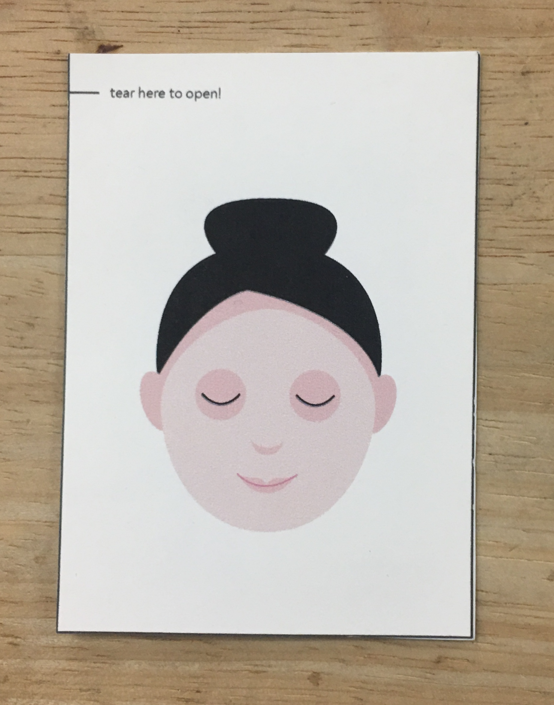
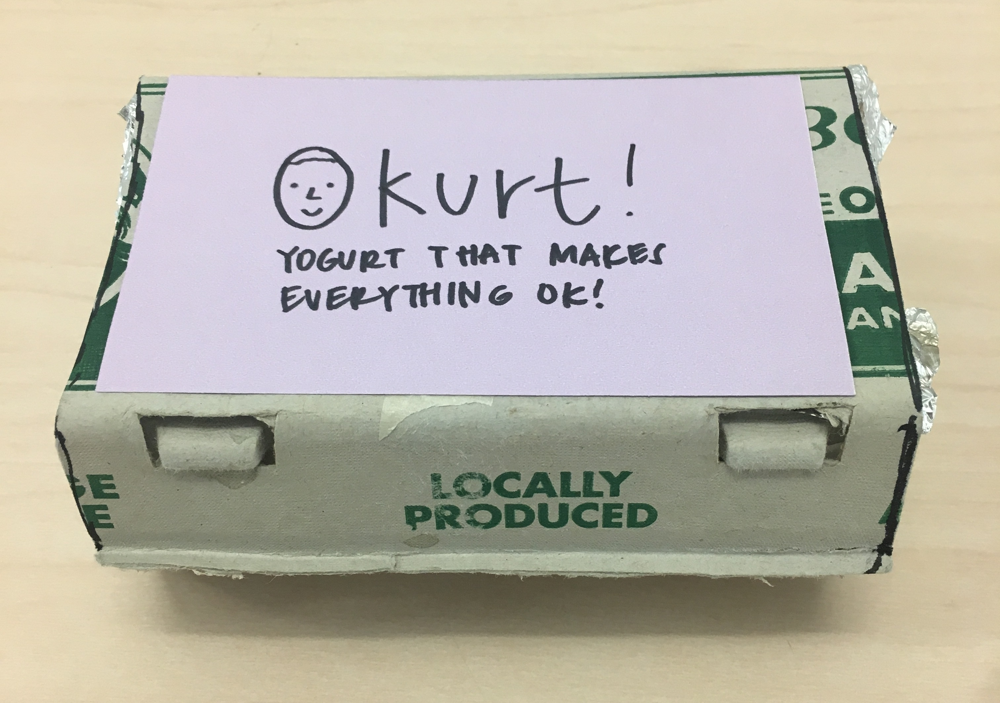
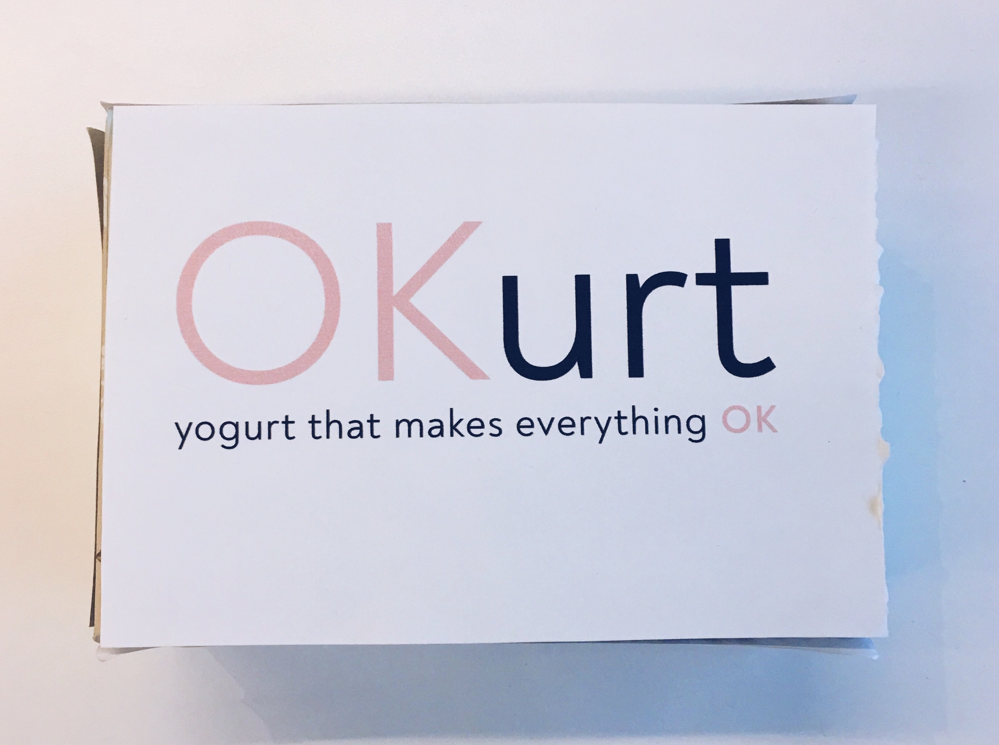

OKurt
Role: Product Designer & Graphic Designer
Duration: June - July 2019
Collaborators: Teresa Pho, Dominic Hugo, Avinash Reddy
Design programs used: Adobe Illustrator

Overview
OKurt is a small and convenient yogurt package designed to make your morning more relaxing. It helps people on a time crunch in the morning take a moment to slow down and relax, as well as get a healthy meal in! Inside, it has a yogurt compartment and a disposable spoon, a compartment with a face mask, a granola package (for the yogurt), and a tube of honey.
By interviewing extreme users, we learned that people often feel rushed and stressed in the morning and have trouble deciding what to eat. This led to the question, "How might we turn time in the morning into relaxing or self-care time?" After ideation, I expanded on one of our ideas and came up with OKurt, an all-in-one package with yogurt and a face mask. I created the brand and graphics for our product and was also very involved in prototyping and user testing.
If I could've done this project again, I would've worked a lot more on our prototypes. I think our first iteration should've been a lot more high fidelity because we were making a type of beauty product. I also think we could've iterated a lot more on our final product, specifically on the package size and on the integration of the face mask packet.
Prompt
For this project, my class was given an open prompt:
Reimagine the breakfast experience.
Research
We did some secondary and user research to gain a better understanding of the current space of breakfast.
From secondary research, we discovered that
Using this information, our initial statement of intent was
"We want to make breakfast convenient for people every day. We want to prevent people from skipping breakfast."
After that, we conducted user interviews with three extreme users:
- A night owl
- A nurse working night shifts, and
- A single mother
Single mother's kitchen space
Night owl eating breakfast

Single mother's morning timeline
Here are some key quotes:
- Linda: "Maybe if I didn't make breakfast for Grace, I wouldn't feel so rushed. I would get more of my own stuff done, maybe spend more time getting dressed or doing makeup."
- April: "I live by the minute. Those 10 minutes spent microwaving and making lunch make a difference."
Synthesis
We did some synthesis to try to uncover more interesting insights and patterns from our research.
We created affinity diagrams and an empathy map.
Initial affinity diagram
Empathy map
Focused-down affinity diagram (insights my team and I found interesting)
Key Insights
Our key insights were
- People feel rushed and stressed in the morning because of a lack of time. They have a set amount of time from waking up to getting out the door.
- Breakfast involves a lot of "think time," time in which the user is thinking about what to eat or make for breakfast (i.e. in the morning or while buying groceries).
- Different members of the household eat different breakfast items (i.e. mother eats yogurt, child eats eggs).
- Some people's breakfast choices and routines are motivated by nutrition.
One of the most influential POVs from our research and insights was:
A single mom with a child who works regular hours seeks to stay on schedule in the morning because there's a limited set amount of time for her from waking up to getting out the door.
Something we realized from all of this research and synthesis is that it's not that people don't have time for themselves in the morning, but they choose not to have time for themselves. People need a moment to slow down in the morning.
Ideation
Based on our key insights and research, we formulated some How Might We (HMW) questions to help us brainstorm. We thought these ones were the most interesting:
- HMW reduce or entirely remove "think time"?
- HMW make breakfast a mandatory and wanted priority in the morning routine?
- HMW turn time in the morning into relaxing or self-care time?
- HMW reduce the number of tasks in the morning routine?
Idea Selection
We organized all of our ideas onto a matrix with feasibility on the y-axis and level of innovation on the x-axis.
- We measured feasibility as how easily the product or service could be created or put into motion today.
- We measured innovation as how creative the product or service was and if it or something like it already existed in the market.
Then, we each voted on three different ideas from our board.
Here are the four ideas we narrowed down to.
After some discussion, we ended up choosing the face mask + food idea. We all thought it was very innovative. We were also inspired by our instructor saying that when she did face masks with cucumbers, she would put a slice on her face, then eat one, then put a slice on, then eat one, etc. We wanted to explore ways we could expand on this idea to tie together nutrition and relaxation in the morning.
Idea Expansion
We decided to expand the face mask + food idea into OKurt, a small and convenient yogurt package designed to make your morning more relaxing. In the package, there is one compartment for yogurt the user can eat along with another compartment for yogurt the user can put on their face as a face mask. We also added another smaller compartment for granola the user can mix into the yogurt they would eat.
Made by me
- We wanted to make everything about OKurt disposable to make the product more convenient and time-efficient for users in the morning. We have foil covering each compartment, with a disposable spoon attached to the edible yogurt compartment and a popsicle stick attached to the face mask yogurt compartment.
- The idea to add in the face mask element came from our insight that people feel rushed and stressed in the morning. We wanted to give users a way to relax.
- The yogurt mask takes 5-10 minutes; then, the user can wash it off with warm water. The user can multitask and do other things while they have the mask on.
- The face mask yogurt is edible as well, in case the user gets confused or decides to take OKurt to-go.
- The yogurt for eating has different flavors, like strawberry, blueberry, and peach. The face mask yogurt is plain.
- Each package is sold individually.
Initial Prototype
I did some online research to see if anything like OKurt already exists. I didn't find anything like OKurt, but I did discover that oatmeal and honey can be added to a yogurt face mask and are great for the skin. I then drew up some variations of OKurt with oatmeal and/or honey instead of granola.
We also wanted to explore different ways to package the yogurt. I did some quick A/B testing of the variations with my friend Kevin using these drawings.
Here are some photos of our first prototype.

Iteration
We presented our initial prototype in class and received a lot of feedback that it was way too low fidelity, especially for a type of beauty product.
For our second iteration, we used a much higher-quality box, with a magnetic clasp. We kept the same general structure and features from our first prototype.

Brand
Making the assumption that most men do not know much about skincare or face masks, we tentatively decided on females as our target audience. I created a simple brand for the product, using a simple and light pink color paired with a dark gray for the logo. I used the light pink color since I thought it made sense for a beauty product like ours. I also created a cute catchphrase to go along with the product: "yogurt that makes everything OK."
We wanted the packaging for the face mask to be more like a beauty product instead of a food item. Our first version of the packaging was to put it in a small cosmetic cream container. Our second version was to use a traditional face mask packet with a traditional face mask inside (not using yogurt). I created a graphic for the packet.
User Testing
We conducted two separate user tests with people in UC Berkeley's student union. They weren't comfortable having their faces in the video, which is why they aren't shown.
Here are a few illuminating video clips from our user tests.
General pain points
Users had trouble figuring out how to open the box -- the clasp on the side wasn't very intuitive.
Feedback from female user
- Thought the product was really cute, really liked it
- "I would definitely get it if it was on the market; it would be cool to have your little set for breakfast in the morning."
- Thinks replacing the items inside would be a good idea, might be cheaper that way
- Likes the face mask packet more than the cream container since she's more familiar with it
Feedback from male user
- Was very confused by the product until we fully explained it
- Said that he didn't know how to use a face mask and wouldn't have known the face mask packet was what it was upon first sight
Final Product
Presenting OKurt! Our product helps people on a time crunch in the morning take a moment to slow down and relax, as well as get a healthy meal in!
The male user confirmed what we had originally assumed, that men are not very familiar with skincare or face masks. We decided on females as our target audience.
Because we were on a time crunch, we weren't able to make many changes for the final iteration. Here are some of the changes we did make though:
- Because the users had trouble opening the box, we taped down the paper covering the box better. We also drew an arrow pointing to the side clasp, so people would know where to open it.
- The female user said she liked the face mask packet better, so we decided to use that instead of the cream container. I created a back side for the face mask packet with our brand name and brief instructions.
- Since we weren't using yogurt anymore for the face mask, and the purpose of the oatmeal was to be part of the mask, we switched out the oatmeal for granola. We thought granola would taste better with the yogurt.
- I printed out smaller labels for the yogurt and the face mask and gave the face mask label more visible placement.
Reflections
Improvements
If I could do this project again, I definitely would've worked a lot harder on the prototypes.
- I would've worked harder to make our first prototype higher fidelity to fit the concept of a beauty product.
- I also would've urged our group to iterate much more on our second prototype. Yes, it was a lot more high-fidelity than our first one, but we should've made it disposable-looking to fit our goal of making the user's morning stress-free and more convenient. We confused the female user with the product's size and sturdiness, making her think it would be better off reusable.
- In addition, we should've iterated on a better way to integrate the face mask packet -- having a separate compartment for it was very space-inefficient. In the future, I want to make better and more intuitive prototypes, so users will immediately understand every aspect of the product.
Lessons
Teamwork is hard. It was very hard for me to work with one of my team members because we had completely different mindsets about working as a team. The experience, though difficult, helped me grow a lot in my communication and teamwork skills. Happy to share more if you're interested!